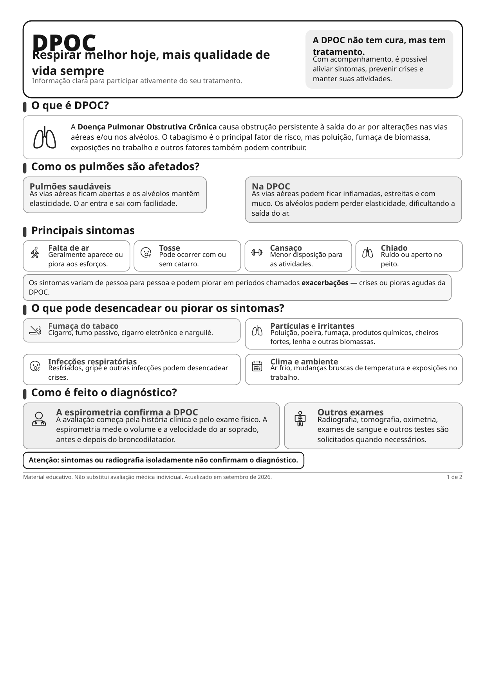
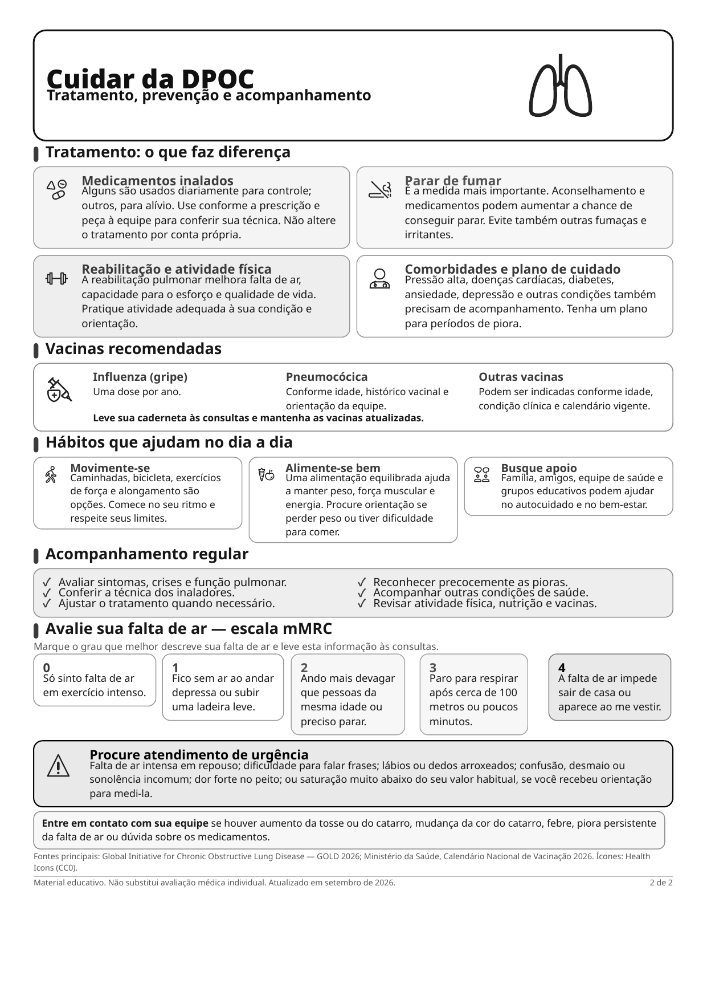

DPOC: respirar melhor hoje


Ler o texto do infográfico
Respirar melhor hoje, mais qualidade de vida sempre. Informação clara para participar ativamente do seu tratamento.
A DPOC não tem cura, mas tem tratamento. Com acompanhamento, é possível aliviar sintomas, prevenir crises e manter suas atividades.
O que é DPOC?
A Doença Pulmonar Obstrutiva Crônica causa obstrução persistente à saída do ar por alterações nas vias aéreas e/ou nos alvéolos. O tabagismo é o principal fator de risco, mas poluição, fumaça de biomassa, exposições no trabalho e outros fatores também podem contribuir.
Como os pulmões são afetados?
- Pulmões saudáveis: as vias aéreas ficam abertas e os alvéolos mantêm elasticidade. O ar entra e sai com facilidade.
- Na DPOC: as vias aéreas podem ficar inflamadas, estreitas e com muco. Os alvéolos podem perder elasticidade, dificultando a saída do ar.
Principais sintomas
- Falta de ar: geralmente aparece ou piora aos esforços.
- Tosse: pode ocorrer com ou sem catarro.
- Cansaço: menor disposição para as atividades.
- Chiado: ruído ou aperto no peito.
Os sintomas variam de pessoa para pessoa e podem piorar em períodos chamados exacerbações, crises ou pioras agudas da DPOC.
O que pode desencadear ou piorar os sintomas?
- Fumaça do tabaco: cigarro, fumo passivo, cigarro eletrônico e narguilé.
- Partículas e irritantes: poluição, poeira, fumaça, produtos químicos, cheiros fortes, lenha e outras biomassas.
- Infecções respiratórias: resfriados, gripe e outras infecções podem desencadear crises.
- Clima e ambiente: ar frio, mudanças bruscas de temperatura e exposições no trabalho.
Como é feito o diagnóstico?
A espirometria confirma a DPOC. A avaliação começa pela história clínica e pelo exame físico. A espirometria mede o volume e a velocidade do ar soprado, antes e depois do broncodilatador.
Outros exames: radiografia, tomografia, oximetria, exames de sangue e outros testes são solicitados quando necessários.
Atenção: sintomas ou radiografia isoladamente não confirmam o diagnóstico.
Tratamento: o que faz diferença
- Medicamentos inalados: alguns são usados diariamente para controle; outros, para alívio. Use conforme a prescrição e peça à equipe para conferir sua técnica. Não altere o tratamento por conta própria.
- Parar de fumar: é a medida mais importante. Aconselhamento e medicamentos podem aumentar a chance de conseguir parar. Evite também outras fumaças e irritantes.
- Reabilitação e atividade física: a reabilitação pulmonar melhora falta de ar, capacidade para o esforço e qualidade de vida. Pratique atividade adequada à sua condição e orientação.
- Comorbidades e plano de cuidado: pressão alta, doenças cardíacas, diabetes, ansiedade, depressão e outras condições também precisam de acompanhamento. Tenha um plano para períodos de piora.
Vacinas recomendadas
- Influenza (gripe): uma dose por ano.
- Pneumocócica: conforme idade, histórico vacinal e orientação da equipe.
- Outras vacinas: podem ser indicadas conforme idade, condição clínica e calendário vigente.
Leve sua caderneta às consultas e mantenha as vacinas atualizadas.
Hábitos que ajudam no dia a dia
- Movimente-se: caminhadas, bicicleta, exercícios de força e alongamento são opções. Comece no seu ritmo e respeite seus limites.
- Alimente-se bem: uma alimentação equilibrada ajuda a manter peso, força muscular e energia. Procure orientação se perder peso ou tiver dificuldade para comer.
- Busque apoio: família, amigos, equipe de saúde e grupos educativos podem ajudar no autocuidado e no bem-estar.
Acompanhamento regular
- Avaliar sintomas, crises e função pulmonar.
- Conferir a técnica dos inaladores.
- Ajustar o tratamento quando necessário.
- Reconhecer precocemente as pioras.
- Acompanhar outras condições de saúde.
- Revisar atividade física, nutrição e vacinas.
Avalie sua falta de ar, escala mMRC
Marque o grau que melhor descreve sua falta de ar e leve esta informação às consultas.
- Só sinto falta de ar em exercício intenso.
- Fico sem ar ao andar depressa ou subir uma ladeira leve.
- Ando mais devagar que pessoas da mesma idade ou preciso parar.
- Paro para respirar após cerca de 100 metros ou poucos minutos.
- A falta de ar impede sair de casa ou aparece ao me vestir.
Procure atendimento de urgência
Falta de ar intensa em repouso; dificuldade para falar frases; lábios ou dedos arroxeados; confusão, desmaio ou sonolência incomum; dor forte no peito; ou saturação muito abaixo do seu valor habitual, se você recebeu orientação para medi-la.
Entre em contato com sua equipe se houver aumento da tosse ou do catarro, mudança da cor do catarro, febre, piora persistente da falta de ar ou dúvida sobre os medicamentos.
Fontes principais: Global Initiative for Chronic Obstructive Lung Disease (GOLD 2026); Ministério da Saúde, Calendário Nacional de Vacinação 2026.